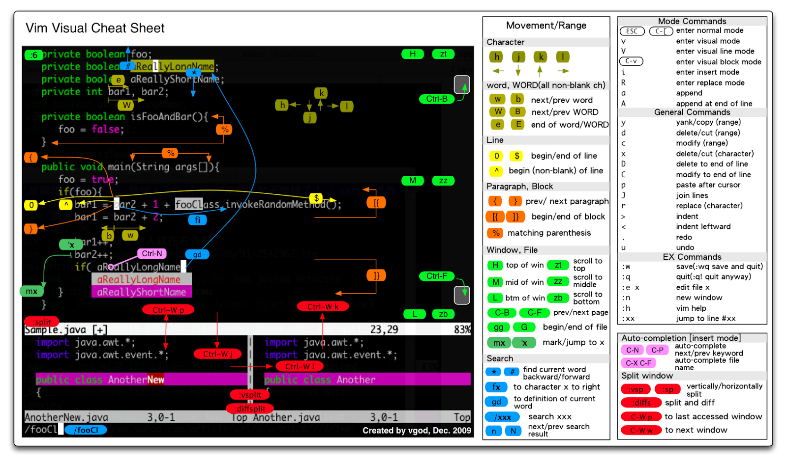
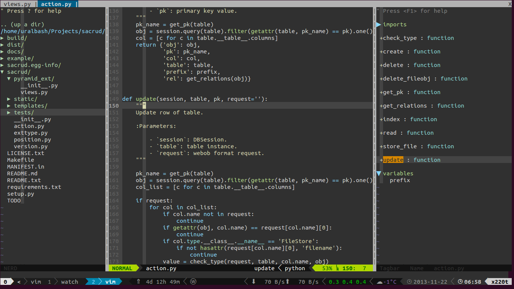
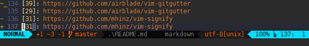
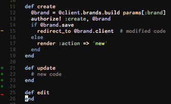

|
Nov 23, 2013
|
Python’им в Vim¶
В продолжение статьи о рабочем окружении (С чего начать?©), по просьбам трудящихся и во благо партии пишу о текстовом редакторе Vim.
Думаю в лишнем представлении Vim не нуждается, это очень популярный редактор, которым пользуется огромное количество программистов. Посмотрим, чем он так хорош:
Консоль¶
Реально же круто писать код в консоле, не отвлекаясь на X окна!? Пишешь код,
тут же смотришь логи сервера, тут же запускаешь тесты, дебажишь, комитишь, ну и
т.д. Что бы бысто выйти в консоль из vim можно нажать Ctr^z, вернуться
выполнив команду fg. Или можно ввести команду :sh в Vim, что бы
вернуться просто закрыть консоль командой exit. Для бОльших благ есть
tmux.
Основные настройки¶
В Vim настройки хранятся в файле ~/.vimrc, а плагины в директории
~/.vim. Для начальных настроек добавьте в ваш ~/.vimrc:
""""
" Other settings
"
" подстройка под разные типы файлов
filetype plugin indent on
" Use <leader>l to toggle display of whitespace
nmap <leader>l :set list!<CR>
" And set some nice chars to do it with
set listchars=tab:»\ ,eol:¬
" automatically change window's cwd to file's dir
set autochdir
" I'm prefer spaces to tabs
set tabstop=4
set shiftwidth=4
set expandtab
" Backspace key won't move from current line
set backspace=indent,eol,start
" folding
set foldenable
set foldmethod=indent
set foldlevel=99
" disable F1
imap <F1> <nop>
nmap <F1> <nop>
" 256 colors
syntax on
if $COLORTERM == 'gnome-terminal'
set t_Co=256
endif
" Подсветка 80й колонки в *.py файлах
autocmd FileType python setlocal colorcolumn=80
" отключаем режим совместимости с Vi
set nocompatible
filetype off
set mousehide "Спрятать курсор мыши когда набираем текст
set mouse=a "Включить поддержку мыши
set termencoding=utf-8 "Кодировка терминала
set novisualbell "Не мигать
set t_vb= "Не пищать! (Опции 'не портить текст', к сожалению, нету)
" Курсор
set cuc cul
highlight CursorLine cterm=none ctermbg=235
highlight CursorColumn cterm=none ctermbg=235
Здесь думаю все понятно, объясню разве что фолдинг. Он у меня включен, но по
умолчанию все развернуто. Что бы сфолдить/разфолдить я иногда пользуюсь
командой za.
Пакетный менеджер¶
vim имеет множество дополнений, раньше приходилось их скачивать и рассовывать файлы по папкам вручную, сейчас есть VundleVim/Vundle.vim (а ещё лучше junegunn/vim-plug) пакетный менеджер который делает это за вас, аля apt-get (для любителей экзотики egalpin/apt-vim).
Установка:
$ git clone https://github.com/gmarik/vundle.git ~/.vim/bundle/vundle
Настройка (~/.vimrc):
""""
" Vundle - packages control
"
set rtp+=~/.vim/bundle/vundle/
call vundle#rc()
" let Vundle manage Vundle
" required!
Bundle 'gmarik/vundle'
Теперь посмотрим в действии, перезагрузим конфиг открытого vim:
:source $MYVIMRC
Установим все пакеты:
:BundleInstall
Обновим пакеты:
:BundleUpdate
Через директиву Bundle добавляются пакеты, причем ищутся они автоматически
на github или vimscripts.
VimCommander¶
для перемещения, удаления файлов и директорий я использую
lpenz/VimCommander, это аналог MidnightCommander. Мне удобнее
прямо в vim нажать <F9> (открыть VimComander), выделить файлы и
нажать <F5> или <F8>, чем переключаться в другое окно и запускать
mc.
VimCommander
Конфиг:
""""
" VimCommander
"
Bundle 'lpenz/vimcommander'
noremap <silent> <F9> :cal VimCommanderToggle()<CR>
Установка:
:BundleInstall
NERDTree¶
Левое окошко на картинке выше это scrooloose/NERDTree, в нем можно
перемещаться по каталогам, открывать файлы в текущем буфере или в виде вкладки
итд. Вкладки и файлы можно тыкать мышью. Что бы открыть файл в текущем окне,
просто кликните по нему мышью или нажмите <ENTER> или o. Для открытия в
новой вкладке нажмите t. Для отображения скрытых файлов (начинаются с
точки), нажмите Shift+i. Для доп. информации ?.
Конфиг:
""""
" NerdTree
"
Bundle 'scrooloose/nerdtree'
"map <F2> :NERDTreeToggle<CR>
" Автоматическое закрытие с последним окном
autocmd bufenter * if (winnr("$") == 1 && exists("b:NERDTreeType") && b:NERDTreeType == "primary") | q | endif
" Убираем в табах путь у файлу (только название файла)
set tabline=%!MyTabLine()
function! MyTabLine()
let s = ''
for i in range(tabpagenr('$'))
" select the highlighting
if i + 1 == tabpagenr()
let s .= '%#TabLineSel#'
else
let s .= '%#TabLine#'
endif
" set the tab page number (for mouse clicks)
let s .= '%' . (i + 1) . 'T'
" the label is made by MyTabLabel()
let s .= ' %{MyTabLabel(' . (i + 1) . ')} |'
endfor
" after the last tab fill with TabLineFill and reset tab page nr
let s .= '%#TabLineFill#%T'
"""""""" " right-align the label to close the current tab page
if tabpagenr('$') > 1
let s .= '%=%#TabLine#%999X X'
endif
"echomsg 's:' . s
return s
endfunction
function! MyTabLabel(n)
let buflist = tabpagebuflist(a:n)
let winnr = tabpagewinnr(a:n)
let numtabs = tabpagenr('$')
" account for space padding between tabs, and the "close" button
let maxlen = ( &columns - ( numtabs * 2 ) - 4 ) / numtabs
let tablabel = bufname(buflist[winnr - 1])
while strlen( tablabel ) < 4
let tablabel = tablabel . " "
endwhile
let tablabel = fnamemodify( tablabel, ':t' )
let tablabel = strpart( tablabel, 0, maxlen )
return tablabel
endfunction
""""
" NerdTree-Tabs
"
Bundle 'jistr/vim-nerdtree-tabs'
map <F2> :NERDTreeTabsToggle<CR>
let NERDTreeIgnore = ['\.pyc$']
jistr/vim-nerdtree-tabs нужен для зацикленного открытия/закрытия по
<F2>.
klen/python-mode¶
отличная штука которая подсвечивает ошибки, следит за PEP 8, позволят делать
breakpoint'ы для дебага, ну и еще многое другое.
Конфиг:
""""
" Python mode
"
Bundle 'klen/python-mode'
" Python-mode
" Activate rope
" Keys:
" K Show python docs
" <Ctrl-Space> Rope autocomplete
" <Ctrl-c>g Rope goto definition
" <Ctrl-c>d Rope show documentation
" <Ctrl-c>f Rope find occurrences
" <Leader>b Set, unset breakpoint (g:pymode_breakpoint enabled)
" [[ Jump on previous class or function (normal, visual, operator modes)
" ]] Jump on next class or function (normal, visual, operator modes)
" [M Jump on previous class or method (normal, visual, operator modes)
" ]M Jump on next class or method (normal, visual, operator modes)
let g:pymode_rope = 0
let g:pymode_lint_ignore = "E501,C0110,W0102,F0401,C0301"
" Documentation
let g:pymode_doc = 1
let g:pymode_doc_key = '<F1>'
"Linting
let g:pymode_lint = 1
let g:pymode_lint_checker = "pyflakes,pep8"
" Auto check on save
let g:pymode_lint_write = 1
" Support virtualenv
let g:pymode_virtualenv = 1
" Enable breakpoints plugin
let g:pymode_breakpoint = 1
let g:pymode_breakpoint_key = '<leader>b'
" syntax highlighting
let g:pymode_syntax = 1
let g:pymode_syntax_all = 1
let g:pymode_syntax_indent_errors = g:pymode_syntax_all
let g:pymode_syntax_space_errors = g:pymode_syntax_all
" Don't autofold code
let g:pymode_folding = 0
" replace pdb to ipdb
iab ipdb import ipdb; ipdb.set_trace()
Для создания breackpoint'а нажимаем <leader>b, остальное думаю и так
понятно по коментам.
Автодополнение кода¶
для автодополнения я использую davidhalter/jedi-vim и Valloric/YouCompleteMe.

Конфиг:
" Jedi - autocomplete
"
Bundle 'davidhalter/jedi-vim'
let g:jedi#show_call_signatures = 1
""""
" YouCompleteMe
"
Bundle 'Valloric/YouCompleteMe'
""""
" SuperTab
"
Bundle 'ervandew/supertab'
Установка:
$ pip install jedi
YoCompleteMe требует минимум 7.3 версию Vim, поэтому его нужно
будет пересобрать. Это очень просто, инструкция здесь.
ervandew/SuperTab включает дополнение по <Tab>.
TagBar¶
majutsushi/tagbar это правое окошко на рисунке:
По сути это навигация по классам и функциям, очень удобно переходить к классу просто по нему кликнув. На рисунке видно что он подсвечивает функцию в которой я нахожусь.
Конфиг:
""""
" TagBar
"
Bundle 'majutsushi/tagbar'
nmap <F8> :TagbarToggle<CR>
Подсветка синтаксиса¶
""""
" Color
"
Bundle 'jonathanfilip/vim-lucius'
color lucius
map <F5> :call ToggleBg()<CR>
set bg=dark
function! ToggleBg()
if &background == 'dark'
set bg=light
else
set bg=dark
endif
endfunc
Тема jonathanfilip/vim-lucius. Можно по <F5> переключаться с светлой, на
темную :)
Подсветка различных типов:
""""
" Syntax file
"
Bundle 'me-vlad/python-syntax.vim'
""""
" sophacles / vim-bundle-mako
"
Bundle "sophacles/vim-bundle-mako"
au BufNewFile,BufRead *.mako set ft=mako
""""
" tmux syntax
"
Bundle "tejr/vim-tmux"
""""
" Vim-Jinja2
"
Bundle 'Glench/Vim-Jinja2-Syntax'
au BufRead,BufNewFile *.jinja2 set filetype=jinja
""""
" Jinja2
"
" Works with http://www.vim.org/scripts/script.php?script_id=2075
" indent/htm.vim
Bundle "lepture/vim-jinja"
au BufNewFile,BufRead *.html,*.htm,*.shtml,*.stm,*.jinja2 set ft=jinja
au FileType jinja setl sw=2 ts=2 et nu
au FileType jinja hi link htmlLink NONE
autocmd Filetype jinja :normal gg=G
Автосохранение¶
я не использую swp файлы для восстановления файлов, вместо этого файл
автосохраняется каждую секунду.
Конфиг:
""""
" Autosave
"
Bundle "vim-auto-save"
let g:auto_save = 1 " enable AutoSave on Vim startup
set noswapfile
Шаблоны¶
aperezdc/vim-template имеет заготовки для разных типов файлов.
Например для файлов *.py, Makefile и т.д. Если я создам новый файл
my.py, то у меня сразу появится следующий текст в нем:
#! /usr/bin/env python
# -*- coding: utf-8 -*-
# vim:fenc=utf-8
#
# Copyright © 2013 uralbash <root@uralbash.ru>
#
# Distributed under terms of the MIT license.
"""
"""
Или Makefile:
#
# Makefile
# uralbash, 2013-11-23 01:01
#
all:
@echo "Makefile needs your attention"
# vim:ft=make
#
Конфиг:
""""
" Template
"
Bundle 'aperezdc/vim-template'
let g:email = 'root@uralbash.ru'
В непустой файл можно добавить шапку так:
:Template py
Powerline¶

Божественно красивая статусная строка, как установить powerline шыкарно
описано здесь.
Но я рекомендую bling/vim-airline, в нем больше фич, в частности совместимость с
популярными плагинами.
Конфиг:
""""
" Powerline - status bar
"
" Bundle 'Lokaltog/powerline', {'rtp': 'powerline/bindings/vim/'}
" Powerline setup
" http://askubuntu.com/questions/283908/how-can-i-install-and-use-powerline-plugin
" set encoding=utf-8 " Necessary to show Unicode glyphs
" set rtp+=$HOME/.local/lib/python2.7/site-packages/powerline/bindings/vim/
" Always show statusline
" set laststatus=2
" set t_Co=256v
" set guifont=DejaVu\ Sans\ Mono\ for\ Powerline\ 9
" let g:Powerline_symbols = 'fancy'
" set laststatus=2
Bundle 'bling/vim-airline'
let g:airline_theme='powerlineish'
let g:airline_powerline_fonts
Git¶
airblade/vim-gitgutter отображает текущую ветку и показывает внесенные изменения по сравнению с предыдущим коммитом.
 Конфиг:
""""
" A Vim plugin which shows a git diff in the 'gutter' (sign column).
"
Bundle 'airblade/vim-gitgutter'
Что еще?¶
Есть еще огромное количество плагинов, которые невозможно описать в одной
статье. Если вы настроите то что я описал, то вам не составит труда добавить
что то самостоятельно. Например мой :BundleList.
" My Bundles
Bundle 'gmarik/vundle'
Bundle 'bling/vim-airline'
Bundle 'airblade/vim-gitgutter'
Bundle 'tpope/vim-fugitive'
Bundle 'scrooloose/nerdtree'
Bundle 'jistr/vim-nerdtree-tabs'
Bundle 'klen/python-mode'
Bundle 'davidhalter/jedi-vim'
Bundle 'spf13/vim-colors'
Bundle 'tpope/vim-vividchalk'
Bundle 'morhetz/gruvbox'
Bundle 'jonathanfilip/vim-lucius'
Bundle 'flazz/vim-colorschemes'
Bundle 'majutsushi/tagbar'
Bundle 'aperezdc/vim-template'
Bundle 'me-vlad/python-syntax.vim'
Bundle 'ervandew/supertab'
Bundle 'lpenz/vimcommander'
Bundle 'Glench/Vim-Jinja2-Syntax'
Bundle 'lepture/vim-jinja'
Bundle 'vim-auto-save'
Bundle 'sophacles/vim-bundle-mako'
Bundle 'tejr/vim-tmux'
Bundle 'lyokha/vim-xkbswitch'
Bundle 'vim-scripts/vim-punto-switcher'
AnyKey¶
для практики конечно же vimtutor, для фана следующие ресурсы:
Другие статьи¶
Итого¶
Таких заметок как эта несчетное множество и все равно они вызывают интерес, потому что в мире нет двух одинаковых конфигов Vim. Вы можете подсмотреть здесь какие-то идеи, но ваша конфигурация не будет один в один совпадать, у вас наверняка есть разногласия со мной и вы захотите сделать Vim удобным для себя. Тем самым конфиг Vim’а является отображением стиля программирования. По этой причине я не выкладываю свой конфиг в чистом виде, для типовых вещей есть IDE - это как костюм пошитый на заказ по вашим размерам и пеплос 52 размера купленный на рынке.